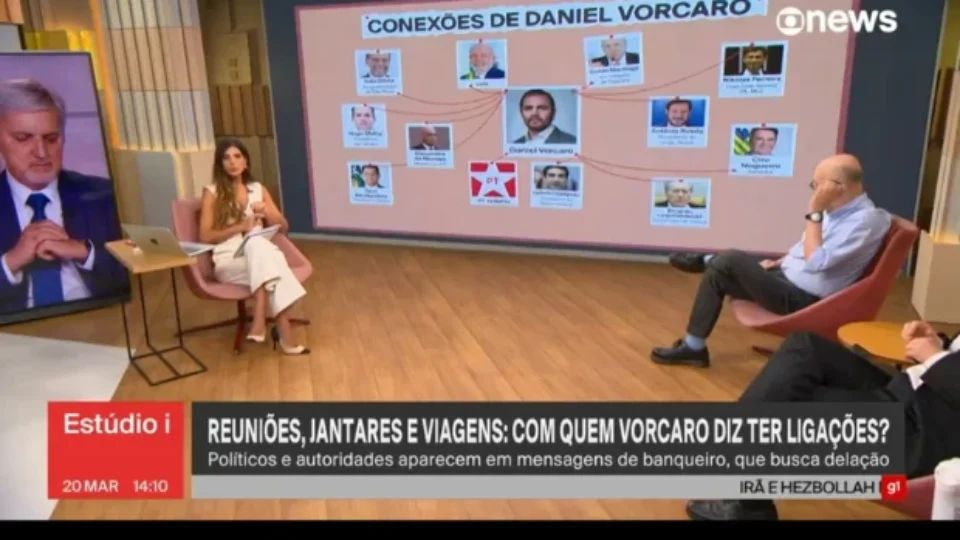

🚨 Evento: Vorcaro vai fazer delação premiada.
Já foi informado que o banqueiro do Banco Master, Vorcaro, irá nos próximos dias colaborar com as autoridades delatando outro envolvidos na fraude financeira do Banco Master.
Vorcaro (Banco Master) pode delatar:
📌 Políticos (Centrão, Ciro Nogueira - "grande amigo");
📌 Governador Ibaneis Rocha (reuniões sobre venda ao BRB);
📌 Magistrados e ministros do STF;
📌 Fraude R$50bi, lavagem e quadrilha.
💰 Ciro Nogueira, amigo do mercado financeiro (dono de mídias como UOL e Valor Econômico), celebrou emendas pró-Master.
💣 Delação explosiva abala Brasília.
📝 Resumo:
📺 Este vídeo do canal O Historiador, apresentado por Carlito Neto, aborda as ligações entre a Rede Globo, o "Centrão" e o escândalo envolvendo o Banco Master e o empresário Daniel Vorcaro.
Aqui estão os pontos principais do vídeo:
✊ O vídeo termina reforçando a necessidade de organização popular para enfrentar a "máquina" mediática e financeira que controla o país [24:12].
Em 20 de março de 2026, o "Estúdio i" da GloboNews utilizou um gráfico, semelhante ao "PowerPoint da Lava Jato", para ilustrar supostas conexões entre Daniel Vorcaro, do Banco Master, e o presidente Lula, baseando-se em mensagens da Polícia Federal que mencionam um encontro no Planalto. O material destaca conversas onde Vorcaro relata proximidade com o governo e se apresenta como um "outsider" contra grandes bancos.

⚠️ Análise da narrativa mediática vs. fatos documentados.
Em 26 de abril de 1962, o jornal O Globo estampou na capa: “Considerado desastroso para o país um 13º mês de salário”. A manchete atacava a proposta do presidente João Goulart de criar o 13º salário, alegando que quebraria a economia. A Globo (e a FIESP) se posicionaram contra o benefício trabalhista, alinhada ao empresariado. O 13º virou lei em 1962 e foi constitucionalizado em 1988.
O Globo apoiou editorialmente o golpe de 1964, chamando-o de “Revolução”. Roberto Marinho e o grupo beneficiaram-se diretamente com concessões e publicidade estatal. Ignoraram protestos como as Diretas Já em 1984 — o Jornal Nacional tratou como “aniversário da cidade”. Em 2013, a própria Globo admitiu em editorial que foi um “erro” e se desculpou.
A Rede Globo quase não cobriu os comícios massivos pelo fim da ditadura. Só deu destaque quando não podia mais ignorar. Isso beneficiou o regime e a transição controlada. Boni (ex-diretor) admitiu que a Globo “deveria ter feito mais”.
No último debate antes do segundo turno, o Jornal Nacional exibiu uma versão editada que favoreceu Fernando Collor. A Globo reconheceu o “erro” da edição desbalanceada anos depois. Análises mostram que isso ajudou a reverter a curva de Lula nas pesquisas.
A Globo deu cobertura massiva às “pedaladas fiscais”, tratando-as como crime grave. Em 2023, o TRF-1 arquivou ações contra Dilma, confirmando que não configuravam crime. Críticos apontam demonização sistemática do PT no período.
A Globo deu destaque exaustivo aos casos contra Lula. Em 2021, o STF anulou as condenações por parcialidade. Críticos apontam que a Globo atuou como “braço midiático” da operação Lava Jato.
Conclusão: Esses casos mostram um padrão recorrente de alinhamento com interesses conservadores e empresariais. A Globo reconheceu erros pontuais, mas críticos veem uma campanha de décadas contra governos populares. 📑